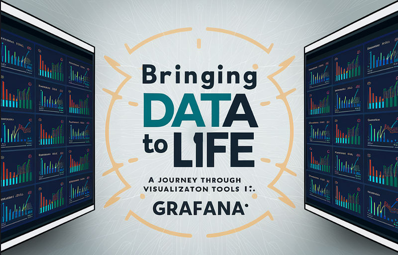
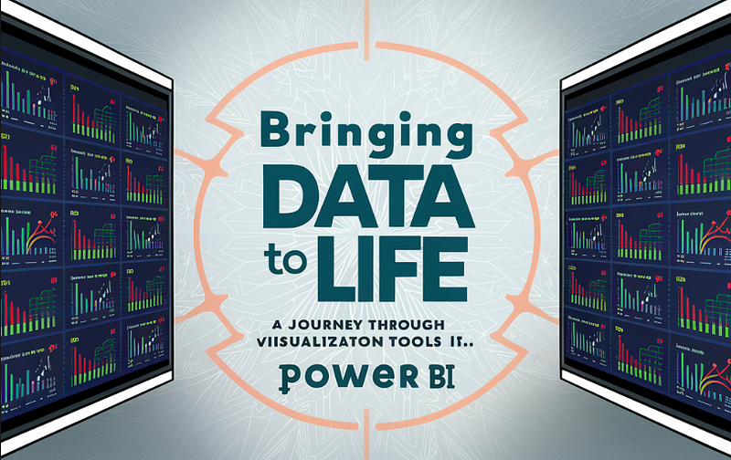
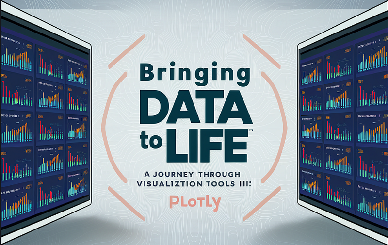

Home
Resume
Portfolio
Blog
Contact
BLOGS

GRAFANA
Visualization
Data Analysis
Bringing Data to Life: A Journey Through Visualization Tools I: Grafana
Huzaif Mirza
April 04, 2024

POWER BI
VISUALIZATION
DATA ANALYSIS
Bringing Data to Life: A Journey Through Visualization Tools II: Power BI
Huzaif Mirza
April 05, 2024

Plotly
VISUALIZATION
DATA ANALYSIS
Bringing Data to Life: A Journey Through Visualization Tools III: Plotly
Huzaif Mirza
April 04, 2024
Arrythmia
Data Analysis and Visualization
Data Pre-processing
From Raw Signal to Insight: Exploring a Large ECG Dataset for Arrhythmia Analysis
Huzaif Mirza
March 16, 2024
GEN AI
Automation
Data Annotation
Enhancing Predictive Modeling through AI-Driven Data Annotation and Training
Huzaif Mirza
February 28, 2024
Web Scrapping
Data Collection
Selenium
Step-by-Step Guide: Building a Web Scraper in Python"
Huzaif Mirza
February 11, 2024